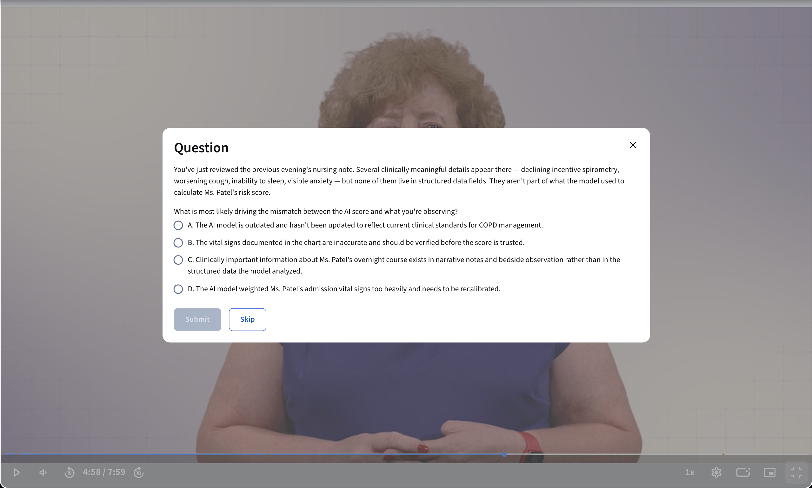

AI for Nurses
Helping nurses make sense of AI in their everyday work.
I led learning design and project management for a three-course Coursera Specialization developed with Duke School of Nursing and Johnson & Johnson. We built the series to help nurses recognize AI in their work, consider what a tool is telling them, and bring their own clinical judgment to the decision.
- My role
- Learning design and project management
- Partners
- Duke School of Nursing and Johnson & Johnson
- Timeline
- September 2025–September 2026
- Format
- Three online courses
Where we started
Nurses were already encountering AI tools during their shifts. We wanted the courses to help them understand those tools through situations they knew and questions that mattered to their work.
I began with survey data collected from working nurses and conversations with our project partners. That helped me propose a three-course path: first recognizing where AI appears, then evaluating its outputs, and finally practicing how to use that understanding in clinical situations.
- Course 1Recognizewhere AI appears in nursing practice
- Course 2Evaluatewhat an AI tool’s outputs are telling you
- Course 3Practiceusing that understanding in clinical situations
I shared the proposed structure and early learning examples with stakeholders so we could agree on the direction before developing the courses further.
What we learned from nurses
We brought registered nurses into the design process to help us understand how the learning would fit their experience.
In one session, they described four ways AI showed up during a shift: something was flagged, summarized, prioritized, or triggered. Those descriptions gave us a familiar way to organize the content.
Select a pattern to see what nurses notice and the vocabulary it introduces.
A score fires, an alert appears, or a Best Practice Advisory surfaces. The system detected a pattern and drew your attention to it.
What nurses see
- Deterioration alert
- Fall risk score
- Sepsis BPA
Vocabulary it leads to
- Course 1
- Predictive AI · Machine learning · Inputs & outputs
- Course 2
- Features & labels · Training data · Sensitivity & specificity
Text was constructed from documented information: a drafted note, a discharge summary, an overnight synthesis. The system produced language for you to review.
What nurses see
- Discharge summary draft
- Progress note
- After-visit summary
Vocabulary it leads to
- Course 1
- Generative AI · AI model vs. tool
- Course 2
- Self-supervised learning · Large language models · NLP · Unstructured data
Your patient list is reordered, a message inbox is ranked, or a rounding order is suggested. The system shaped what information reaches you first.
What nurses see
- Reordered patient list
- Risk-ranked rounding
- Prioritized inbox
Vocabulary it leads to
- Course 1
- AI model vs. tool · Inputs & outputs
- Course 2
- Training data · Features & labels · Supervised learning
A protocol populates, a care plan initiates, or a checklist appears. A threshold was crossed and the system started a pathway on your patient’s behalf.
What nurses see
- Fall prevention protocol
- Sepsis bundle
- Skin care plan
Vocabulary it leads to
- Course 1
- Rule-based systems · AI governance
- Course 2
- Sensitivity & specificity · Supervised learning
- Course 3
- AI-SBAR
We carried the four patterns through all three courses. As learners encountered new ideas and vocabulary, they could connect them to something they already recognized.
How the learning comes together
Each module introduces a concept, gives learners a way to explore it, and connects it to nursing practice.
Subject-matter expert videos explain ideas in clinical language. Short Term Spotlights make individual terms more concrete. Interactive activities give nurses a chance to try an idea and see what happens.
Practice assessments, conversations about tools from learners’ own workplaces, and final assessments support the progression across the series. Videos, readings, activities, and assessments are all designed with accessibility at the forefront. I used ChatGPT and Claude, along with Claude Code, to support the design of the courses, including the activities below.
1. Comparing two kinds of AI
In this activity, learners explore a fall risk score and a generated discharge summary. They can run the examples again and observe what changes.
The activity introduces predictive and generative AI through familiar situations and gives learners a reason to look more closely at the information each tool produces.
2. Exploring what a model uses
Another activity lets learners change the information a model receives and observe how its output responds.
It gives learners a way to explore inputs and outputs while considering what the model may know, and what a nurse may know from the wider situation.
3. Practicing a clinical decision
The third course brings the ideas together through five guided clinical cases. Learners review a situation, pause during a video to make a decision, and reflect on their reasoning.
These cases give nurses a chance to practice applying the course concepts in the context of patient care.

Bringing the project together
Alongside learning design, I led project management as we moved through writing, recording, activity development, learner testing, and partner review.
The work involved faculty, nurses, our design team, and project partners. Early examples and opportunities for feedback helped us build a shared understanding of what we were creating.
The Specialization launched in September 2026. Duke School of Nursing and Johnson & Johnson funded a second year of collaboration, and we’re now developing a new Specialization that builds on what we learned together.
View the development timeline ↓
- September 2025Project kickoff
- October – November 2025Understanding learners' needs, trying out early learning activities, and gathering feedback
- December 2025Script writing, editing, and feedback; helping faculty prepare for recording
- January – February 2026Media recording and video visual design
- March 2026Co-design session with nurses
- April – May 2026Designing interactives, assessments, and supplemental materials
- June 2026Preparing the courses and testing them with learners
- July 2026Final partner review and approval, CEUs approved
- September 2026Launch